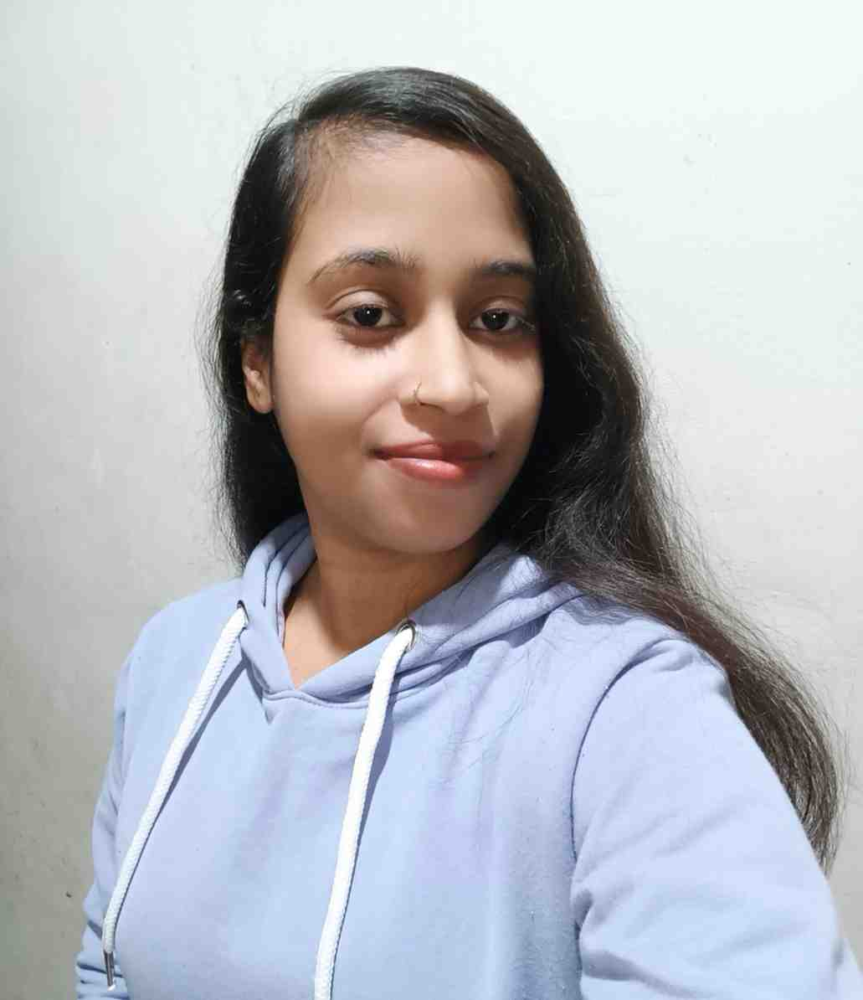

Anju Kumari

Education
-
10th
- Jawahar Navodaya Vidyalaya sheohar,bihar (2013-2018)
-
12th
- Jawahar Navodaya Vidyalaya Bengluru ,karnatka (2018-2020)
-
B.tech
-
Electrical Engineering - IIT KANPUR (2021-2025)
Project
-
Spotify-clone
-
It is a clone of Spotify. Build using html,css,javascript.
-
Gain experties in fronted ,problem-solving and debugging.
-
Household service app
- It is responsive multi-page service application using Reactjs along with tailwind css and bootstrap
- Gain experties in fronted.
Skills
- Html
- Css
- Javascript
- Reactjs
- C++
- C
- Sql
- Python
- Tailwind css
- Bootstrap
Awards and Certifications
-
Secured a category rank of 1294 in Joint Entrance Examination Advanced - 2021 among 0.2 million candidates
- Achieved top 1% ranking in the Joint Dakshana Selection Test JDST 2018,received a fully funded two-year IIT JEE coaching
- Honored with the Shraman Foundation Scholarship for demonstrated merit from a pool of 1,200 students at IIT Kanpur
- Qualified Jawahar Navodaya Vidyalaya test (JNVST 2013) and got free CBSE education from class 6th to class 12th
Position of Responsibility
Volunteer Coordinator | Navodaya COE Selection Test Administration | Dakshana Alumini Network Council
-
Led a team of 25 volunteers to coordinate and administer examinations across 600+ centers, ensuring smooth execution, protocol
compliance, and real-time problem resolution to uphold exam integrity
-
Maintained high standards of exam integrity by enforcing rules, verifying candidate credentials, and promptly addressing issues
-
Facilitated logistics, communication, and coordination between center staff, volunteers, and program organizers, promoting clarity, con-
sistency, and timely execution during critical exam operations
-
Contributed to the successful delivery of free JEE and NEET coaching to underprivileged students by actively participating in large-scale
planning, demonstrating strong leadership, teamwork, and a deep commitment to educational equity
Extra- Curricular Activities
-
Organized a blood donation drive at IIT Kanpur on Republic Day 2023, fostering community engagement promoting social responsibility
-
Managed the Fine Arts section at Antaragni, IIT Kanpur’s annual cultural festival, overseeing event logistics, involvement, and execution
Other